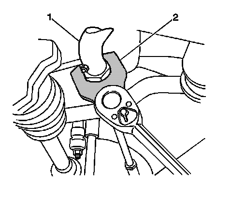

Steering Linkage Inner Tie Rod Replacement
Steering Linkage Inner Tie Rod Replacement
Tools Required
J 34028 Inner Tie Rod Wrench
Removal Procedure
1. Raise the vehicle. Refer to Lifting and Jacking the Vehicle.
2. Remove the engine protection shield, if equipped.
3. Remove the outer tie rod end.

4. Remove the inner tie rod end from the relay rod using the J 34028 (2).
Installation Procedure
Important: Perform the following procedure before installing the new tie rod ends:
1. Remove all traces of the oil, grease, or other contaminants.
2. Clean the threads of the tie rod with denatured alcohol or the equivalent and allow to dry.
3. Apply red LOCTITE(TM) threadlocker, GM P/N 12345493 (Canadian P/N 10953488) to the threads of the inner tie rod.
Notice: Refer to Fastener Notice.
4. Install the inner tie rod to the relay rod.
Using the J 34028 (2) tighten the tie rod to 100 N.m (74 lb ft).
5. Install the outer tie rod end.
6. Install the engine protection shield, if equipped.
7. Lower the vehicle.
8. Verify the wheel alignment. Refer to Wheel Alignment Specifications.